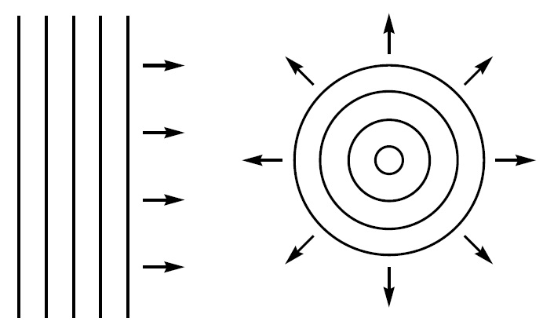
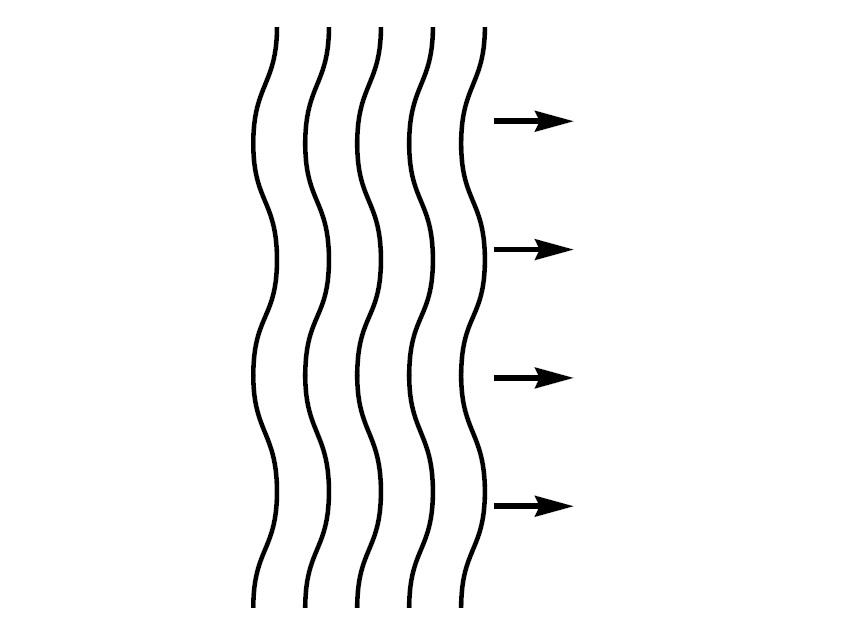

| $n$th dark ring | $r^2_n=nRλ_0$ |
| $n$th bright ring | $r^2_n=\(n+1/2\)Rλ_0$ |
$^a$ Viewed in reflection.
| $r_n$ | radius of $n$th ring | $n$ | integer $(≥0)$ |
| $R$ | lens radius of curvature | $λ_0$ | wavelength in external medium |
PHYSICAL OPTICS
INTRODUCTION
Interference results from the superposition of two or more electromagnetic waves. From a classical optics perspective, interference is the mechanism by which light interacts with light. Other phenomena, such as refraction , scattering, and dif fraction, describe how light interacts with its physical environment. Historically, interference was instrumental in establishing the wave nature of light. The earliest observations were of colored fringe patterns in thin films. Using the wavelength of light as a scale, interference continues to be of great practical importance in areas such as spectroscopy and metrology.
$*$
WAVES AND WAVEFRONTS
The electric field vector due to an electromagnetic field at a point in space is composed of an amplitude and a phase
${\bo E}(x,y,z,t)={\bo A}(x,y,z,t)e^{iφ(x,y,z,t)}$
or
${\bo E}({\bo r},t)={\bo A}({\bo r},t)e^{iφ({\bo r},t)}$
where ${\bo r}$ is the position vector and both the amplitude ${\bo A}$ and phase $φ$ are functions of the spatial coordinate and time.
This expression can be simplified if a linearly polarized monochromatic wave is assumed:
${\bo E}(x,y,z)={\bo A}(x,y,z)e^{i\[ωt-φ(x,y,z)\]}$
where $ω$ is the angular frequency in radians per second and is related to the frequency $ν$ by
$ω=2πν$
PLANE WAVE
The simplest example of an electromagnetic wave is the plane wave. The plane wave is produced by a monochromatic point source at infinity and is approximated by a collimated light source. The complex amplitude of a linearly polarized plane wave is
${\bo E}(x,y,z,t)={\bo E}({\bo r},t)={\bo A}e^{i\[ωt-{\bo k}{\bo r}\]}$
where ${\bo k}$ is the wave vector . The wave vector points in the direction of propagation , and its magnitude is the wave number $k=2π\text"/"λ$, where $λ$ is the wavelength. The wavelength is related to the temporal frequency by the speed of light $v$ in the medium:
$λ={v}/{ν}=2π{v}/{ω}={c}/{nv}=2π{c}/{nω}$
where $n$ is the index of refraction, and $c$ is the speed of light in a vacuum. The amplitude ${\bo A}$
of a plane wave is a constant over all space, and the plane wave is clearly an idealization.
If the direction of propagation is parallel to the $z$ axis, the expression for the complex
amplitude of the plane wave simplifies to
${\bo E}(x,y,z,t)={\bo A}e^{i\[ωt-kz\]}$
We see that the plane wave is periodic in both space and time. The spatial period equals the wavelength in the medium, and the temporal period equals $1\text"/"ν$. Note that the wavelength changes with index of refraction, and the frequency is independent of the medium.
-
SPHERICAL WAVE
The second special case of an electromagnetic wave is the spherical wave which radiates from an isotropic point source. If the source is located at the origin, the complex amplitude is
$E(r,t)=(A\text"/"r)e^{i\[ωt-kr\]}$
where $r=\(x^2+y^2+z^2\)^{1\text"/"2}$. The field is spherically symmetric and varies harmonically with time and the radial distance. The radial period is the wavelength in the medium. The amplitude of the field decreases as $1\text"/"r$ for energy conservation. At a large distance from the source, the spherical wave can be approximated by a plane wave. Note that the vector characteristics of the field (its polarization) are not considered here as it is not possible to describe a linear polarization pattern of constant amplitude that is consistent over the entire surface of a sphere. In practice, we only need to consider an angular segment of a spherical wave, in which case this polarization concern disappears.
-
WAVEFRONTS
Wavefronts represent surfaces of constant phase for the electromagnetic field . Since they are normally used to show the spatial variations of the field , they are drawn or computed at a fixed time . Wavefronts for plane and spherical waves look like

The field is periodic, and a given value of phase will result in multiple surfaces. These surfaces are separated by the wavelength. A given wavefront also represents a surface of constant optical path length (OPL) from the source. The OPL is defined by the following path integral:
$(\text"OPL")=∫_{\S}^{\P}n(s)ds$
where the integral goes from the source $S$ to the observation point $P$, and $n(s)$ is the index of refraction along the path. Variations in the index or path can result in irregularities or aberrations in the wavefront. An aberrated plane wavefront is shown as

Note that the wavefronts are still separated by the wavelength.
The local normal to the wavefront defines the propagation direction of the field . This
fact provides the connection between wave optics and ray or geometrical optics. For a
given wavefront, a set of rays can be defined using the local surface normals. In a similar
manner, a set of rays can be used to construct the equivalent wavefront.
$*$
INTERFERENCE
The net complex amplitude is the sum of all of the component fields,
${\bo E}(x,y,z,t)=∑↙{i}{\bo E}_i(x,y,z,t)$
and the resulting field intensity is the time average of the modulus squared of the total complex amplitude
$I(x,y,z,t)=‹|{\bo E}_i(x,y,z,t)|^2›$
where $‹...›$ indicates a time average over a period much longer than $1\text"/"ν$. If we restrict ourselves to two interfering waves ${\bo E}_1$ and ${\bo E}_2$, this result simplifies to
$I(x,y,z,t)=‹|{\bo E}_1|^2›+‹|{\bo E}_2|^2›$ $+‹{\bo E}_1⋅{\bo E}_2^{*}›$ $+‹{\bo E}_1^{*}⋅{\bo E}_2›$
or
$I(x,y,z,t)=I_1+I_2+‹{\bo E}_1⋅{\bo E}_2^{*}›$ $+‹{\bo E}_1^{*}⋅{\bo E}_2›$
where $I_1$ and $I_2$ are the intensities due to the two beams individually, and the $(x,y,z,t)$
dependence is now implied for the various terms.
...
This general result can be greatly simplified if we assume linearly polarized monochromatic waves of the form
${\bo E}_i(x,y,z)={\bo A}_i(x,y,z)e^{i\[ω_it-φ_i(x,y,z)\]}$
The resulting field intensity is
$I(x,y,z,t)=I_1+I_2$ $+2\({\bo A}_1⋅{\bo A}_2\)\cos\[(ω_1-ω_2)t-\(φ_1(x,y,z)-φ_2(x,y,z)\)\]$
The interference effects are contained in the third term, and we can draw two important conclusions from this result. First, if the two interfering waves are orthogonally polarized, there will be no visible interference effects, as the dot product will produce a zero coefficient. Second, if the frequencies of the two waves are different, the interference effects will be modulated at a temporal beat frequency equal to the difference frequency.
...